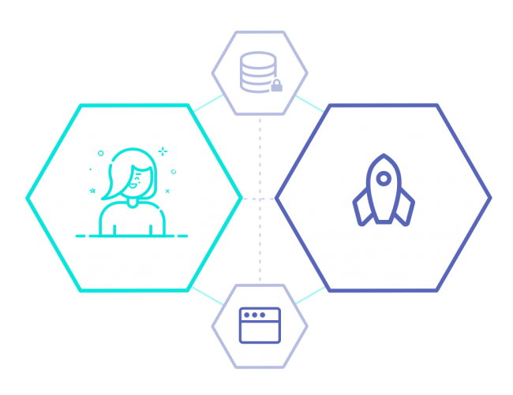

What is Solid?
- What does Solid offer?
Solid is a proposed set of conventions and tools for building decentralized social applications based on Linked Data principles. Solid is modular and extensible and it relies as much as possible on W3C standards and protocols. - True data ownwership
Users have the freedom to choose where their data resides and who is allowed to access it by decoupling content from the application itself. - Modular design
Because applications are decoupled from the data they produce, users can avoid vendor lock-in, seamlessly switching between apps and personal data storage servers, without losing any data or social connections. - Reusing existing data
Developers can easily innovate by creating new apps or improving current apps, all while reusing existing data that was created by other apps. - Inrupt
Inrupt has built a commercial ecosystem to fuel Solid's success and protect the integrity of the next phase of the web. It's mission is to restore rightful ownership of data back to every web user and unleash a new wave of innovation - for developers, for business, for everyone.
Solid was created by the inventor of the World Wide Web, Sir Tim Berners-Lee. Its mission is to reshape the web as we know it. Solid will foster a new breed of applications with capabilities above and beyond anything that exists today.
Currently Solid is trying to attract developers as the technology has not yet advanced to the point where the general public can benefit.
Solid Pod Providers
| Provider | Description | Cost |
|---|---|---|
| Inrupt | A provider by the commercial entity established by the Solid founding team. | Free |
| Solid Community | A provider for the Solid community, by the Solid community. | Free |